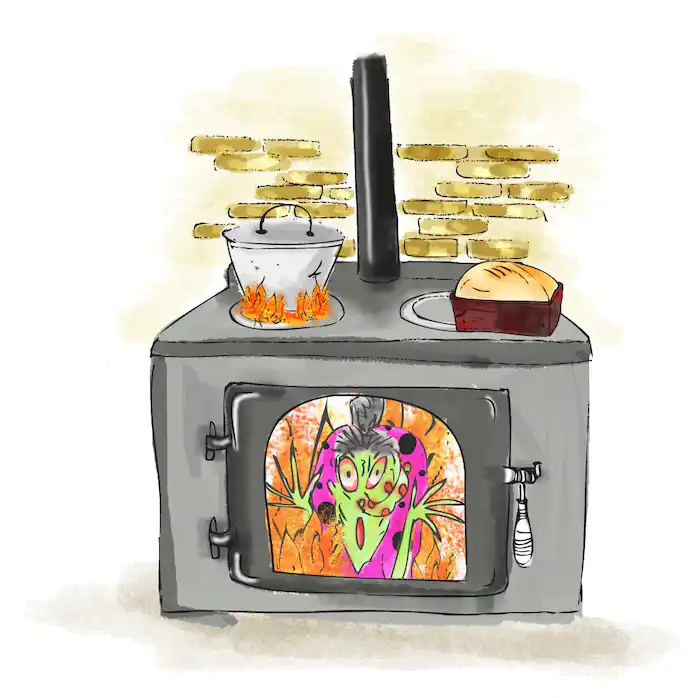

WELCOME TO BED, SWEETY

Translate to:
I CHOOSE:
- read-first!Come here!
- Monty's Rashes
- Tiny lesson
- The moon witch and the origami boy
- Hansel And Gretel
- The Ogglebogs: A Surprise Day 12th episode
- Little sunny girl from author
GOOD READING)
What will be here?
I wanna tell u about these stories. The stories are fictional, but very quite engaging. You can read and listen to audio at the same time. Little stories will help you fall asleep. Have a good read :)
20-25 minutes
Monty's Rashes
“Mum, I don’t feel well.” Monty, the monkey, said as he lay on his bed. “I am having a headache and feel weak in general.” He complained.
“Oh dear, let me check with a thermometer to see if you are running a fever.” Mother replied. After the mother monkey took Monty’s temperature, she realised that he is indeed having one.
“Monty, you are running a fever. Next up, let’s do a Covid-19 test with the test kit to see if you are down with the virus.” Mother continued. After taking his swaps, the results turned out to be negative. “Phew.” Mother heaved a sigh of relief.
“I will prepare some fever medicine for you, Monty. Rest at home for today.” Mother said as she went to get medicine for Monty. After taking them, Monty continued resting for the day.
The following day, Monty woke up to go to the washroom when he gave a loud squeal suddenly. Mother monkey rushed into Monty’s room to check what had happened. When she entered the room, she was shocked. Monty’s face started developing bumps!
“Mum, these bumps are so itchy!” Monty wailed as he scratched all over his face. “Don’t touch your face, Monty! Let me bring you to the doctor now!” Mother said anxiously.
Quickly, Monty and his mother rushed to the clinic. After some time, it was finally Monty’s turn to see the doctor. The doctor looked at the bumps and asked a few questions, “Did you have a headache and a fever?”
Monty replied, “Yes.”
“Did you feel some muscle aches and feeling of tiredness?” the doctor continued.
Monty said, “Yes.”
Next, the doctor examines the bumps on his face and body.
“I think you might have monkeypox.” The doctor said as he took samples of the fluid from the bumps.
Mother monkey was shocked. “What is that? Is there any cure?”
“Well, Monkeypox is caused by a virus. It has been around since the 1950s. It occurs primarily in tropical rainforest areas of central and west Africa and is occasionally exported to other regions. Although it resembles smallpox, it is much less contagious. Unfortunately, as of now, there are still no cures, but vaccines are being developed.” The doctor explained.
“But doctor, how do they spread? I don’t want my family to get it.” Monty asked sadly.
“It can spread through close contact, air droplets from breath, body fluids from the infected person or even contaminated materials such as beddings from the infected.”
“Mum, please stay away from me. I do not wish to infect you.” Monty sulked.
“Yes, it will be great if your mother can wash her hands frequently, especially when she is in contact with you, and also wear a mask!” the doctor advised.
“Please do so, mum. I don’t want you to have ugly face with rashes like me.” Monty looked at his mum sadly.
His mother let out a tiny smile, not knowing if she should laugh or cry.
The end.
20-25 minutes
Tiny Lesson
A mischievous tiger named Tyga bullied other animals as he appeared massive and more ferocious than others. Whenever he sees other smaller animals, he either makes fun of them or pushes them. Everyone avoided him because they were terrified of him.
One day, Tyga was alone in the woods, feeling bored. After walking around aimlessly, he got drowsy and napped under a nearby tree. While in his sleepy state, Tyga suddenly felt an itchy sensation. At first, he merely scratched lightly. However, the itch became more intense, and he began scratching. Tyga could not bear the sudden severe itch that he sat up and scratched hard.
“What exactly is it on my body? Get off of me!” Tyga roared. A little bug crept up to the tiger’s whiskers, waved at him, and said, “Hello, my name is Buggy.” Tyga twitched his whiskers in an attempt to expel Buggy from his face. However, Buggy dodged it and jumped off to the top of his head. “You tiny little thing. Stay away from me! How dare you challenge me when you are just a small little creature? I’m going to smack you flat!” Tyga yelled.
Tyga lowered his head and used his paws to brush Buggy off his head unsuccessfully. Buggy quickly hopped to his back. Tyga tried again to use his claws to reach his back but could not get Buggy. This went on for some time until, eventually, Tyga was exhausted.
“What do you want before you leave me alone?” Tyga asked in frustration. “This is my territory now,” the bug murmured as he emerged from his hiding place.
“What exactly do you mean by “your territory”? You are on MY body.” Tyga said. “I’ll be staying here. You can’t drive me away.” Buggy replied.
This infuriated Tyga and made him determined to get rid of Buggy.
Tyga started shaking his body vigorously to shake off the bug. He began very gently and progressed to a more erratic shaking. After a while, Tyga became dizzy from all the swinging. He came to a halt, believing he had exterminated Buggy. To his surprise, he felt that tingly sensation again. “I’m still here,” Buggy joked.
Tyga then began striking Buggy with his hands and tail all around his body. The more he whipped his body, the more unbearable he felt. “Ouch! My entire body is in excruciating pain.” He yelled. The cheeky Buggy got close to his ears and started chuckling at him.
The enraged Tyga then lay down on the ground and began rolling around, attempting to move over Buggy. However, as he rolled around, he did not notice a sharp branch nearby, which poked him hard. He screamed in agony.
This time, Buggy proceeded to bite him in the ears. Tyga wailed louder. “Please stop.” He pleaded as he was in so much pain. “From now on, you must stop scaring and bullying the other animals,” the bug said. “If not, I’ll return and hide under your furs forever. Do you hear me?” Buggy said.
“I will, of course. I’m not going to hurt the other animals again.” Tyga responded. With that, Buggy flew away.
Since that day, Tyga remembered Buggy’s words and did not disturb the other animals again.
The end.
20-25 minutes
The moon witch and the origami boy
Far far away, in the deepest forest was a small cottage. There lived a moon witch named, Monica.
Do you know why she’s called a Moon Witch? That’s because she only opens her business on nights when there is a full moon. The people who know her called her by that name.
The Moon Witch’s shop is packed with many interesting ancient stones, animal carcasses, and potions of all sorts. However, the most unique thing about the moon witch is her origami. Every piece of paper she folded, come alive with her magic. The moon witch absolutely love folding flowers, boats and insects during her leisure time. Soon, the whole house was filled with origami art.
“Oh dear, there are no more space in my tiny house. I need some help to clear up!” The moon witch thought in dismay.
She began folding some paper to make into little helpers.

However, the messy moon witch can be a little careless. She accidentally dropped one of them near her magic potion which was not sealed properly in the glass jar.
The magic aura senses the magical papers and drifted towards the folded paper boy. After a while, the tiny paper boy sat up. It looked around to check out the surroundings curiously.
“There’s no one here. Looks like I’m going to have some fun!” the paper boy grinned. Quickly, he ran to the table and saw some cookies. He took a bite, and another bite, causing the crumps to fall all over the table. When he heard some noise coming, he hastily got up, slid down the rocking chair and landed on the ground. He yelled out in ecstasy, “I am going out to explore the world!”
Stealthily, he slides himself through the gap of the door and out on his adventure.
As he continued his journey, he came across a village. At this point, he was already famished. The paper boy saw a candy house nearby and decided to pop into the shop. There were a wide variety of candies, lollipops and chocolates. He gobbled one after another and did not notice that the shopkeeper saw him.
“Thief!” The shopkeeper shouted and chased after the paper boy. “Uh-oh.” Once the paper boy realized he was caught, he proceeded to the window and took off. At that very moment, there was a gust of wind so powerful that it blew, and he was able to flee the area by flying with the wind. “Phew, that was close! I am such an adventurer! He reflected on it with a sense of superiority.
20-25 minutes
Hansel And Gretel
Down in the valley was a wood. Next to the wood was a cottage. And in the cottage lived a wood-cutter and his two children—a little boy named Hansel, and his sister, Gretel.
The wood-cutter was a very poor man. Work was scarce and he had fallen on very hard times. He couldn’t even earn enough to feed the family every day, so—more often than not—the children went hungry.
Despite their situation, Hansel and Gretel’s spirits remained high. They never once complained. They could see how much their father loved them and how hard he was working—even if his work brought little reward.
One evening, after the children had gone to bed, the wood-cutter sat talking to his wife next to the fire. The woman was Hansel and Gretel’s stepmother. A simply wretched woman that was desperate to get rid of the children at the first available opportunity.
“Oh, wife,” said the wood-cutter, “I can barely support you and myself, never mind the children. What on earth are we going to do?” “I know what to do,” she said—a wicked smile creeping onto her lips. “Tell me, dear wife,” said the wood-cutter.
“Tomorrow morning, I will take the children deep into the wood—into the very thickest part—and leave them there for the wolves. They will then be out of our way, your wages will support us and we will be freed from this dreadful poverty.” “Feed them to the wolves?” repeated the wood-cutter in horror, “I’ve never heard such nonsense in all my days!” “Foolish man!” she replied, “then we will all perish. You are as well to go and cut wood for our own coffins.”
The wood-cutter said nothing. Hansel and Gretel’s empty, rumbling bellies had kept them awake. They had heard everything—especially the bit about being left out for the wolves, which had terrified both of them beyond words. “What is going to happen to us, Hansel?” sniffed Gretel, as she wiped away a tear. “Don’t cry, Gretel,” he whispered, “I know exactly what to do.”
They lay still until the grownups were asleep. As soon as it was quiet, Hansel got up, put on his coat and slipped outside—making sure not to wake anyone. The moon shone brightly, lighting up the garden. Hansel looked around, intently.
Then, without delay, he began picking up handfuls of little white pebbles that lay on the garden path. He carried on stuffing his pockets until they were full to the brim, then returned to bed. The next morning, there came a rap at the bedroom door.
“Up you get, you pair of lazy rats,” cried the stepmother. “You need to come with me into the wood to gather kindling for the fire. Quick, smart!” Hansel and Gretel got up. The stepmother handed Gretel a piece of bread and said, “Take this for your lunch. It is for both of you and must last you all day, so don’t eat it all at once. You won’t get more!”
Gretel took the bread and they set out into the woods. Hansel seemed preoccupied. Every few steps he would turn around as if looking for something. And this strange behaviour did not go unnoticed by the stepmother. “Why do you keep dropping back and looking behind?” she snapped, clearly irritated.
“I saw a cat,” said Hansel, “and I am checking to see if it is still following us.” “Well, hurry along child,” she said, sharply, “we don’t have time for this childish!” Hansel was lying—he had not seen a cat.
He was staying behind to drop the white pebbles—the ones he had knowingly gathered the previous night—onto the ground behind him as he walked.
They carried on walking. After some considerable time they reached an opening. “Come children,” said the stepmother. “Gather some sticks and I will make us a fire. It is getting very cold and you need some rest.” Hansel and Gretel gathered the sticks.
After making the fire, the stepmother said, “Sit down and rest here, children. I will return with your father once we have finished our days work,” then—without a moment’s hesitation—she scurried off. Hansel and Gretel sat eating bread by the crackling fire. The crust had become a little stale in Gretel’s pocket, but they were too hungry to notice. After wolfing down their bread they quickly grew tired and fell fast asleep.
In fact, they fell into such a deep sleep that they did not notice the hours passing. Several hours passed, then Gretel awoke with a start. “It’s dark!” she cried, “and there is no sign of stepmother or father. Oh, Hansel, I am so very scared. What shall we do?” “Fear not, dear sister,” said Hansel, “I have a cunning plan that will get us home safely.”
The full moon shone brightly in the night’s sky. “Do you see that?” said Hansel, pointing forward. As the light hit the path in front of them the white pebbles—that Hansel had dropped from his pockets along the journey—started to glitter and sparkle in the darkness.
“Brilliant!” cried Gretel, ‘you laid the pebbles to guide us home. Oh what a very clever brother you are.” Hansel smiled. They walked hand-in-hand all night and reached home just before dawn the following day. Their stepmother was utterly furious to see that they had returned home safely. Her scheming plan had failed.
The following year times had not improved. In fact—just as the stepmother had predicted—their situation had worsened greatly. It was now so desperate that only half a loaf of bread remained in the larder. “Something must be done,” the stepmother thought to herself. That evening, after everyone else was in bed, the stepmother stayed up to create her wicked plan.
“I’ve got it!” she said, “I’ll take them even deeper into the woods this time—I know just the place. They will surely never find their way home. A wolf will eat them both up and I will be able to live in peace and plenty.”
Hansel and Gretel’s empty, rumbling tummies had kept them awake once more. Again, they had heard everything. As before, Hansel waited until the stepmother had gone to bed and then made his way to the front door. But, to his horror the door was locked. His heart sank as he returned to bed without a single pebble in his pocket. Early the next morning the stepmother burst into their bedroom, yanked the children out of bed shouting, “Get dressed at once, you lazy stinking little slugs!”
Once they were dressed she gave them a small piece of bread each—from the single remaining loaf—and they set off into the woods. Hansel put his piece of bread in his pocket. As they walked, he stopped every so often, broke off a few crumbs and dropped them on the ground—just as he had done with the pebbles.
They carried on walking for some time. As they walked, the path narrowed. The trees became thick. Very thick. So dense, in fact, that they could barely see a few yards ahead. At this point, one thing was for sure. Hansel and Gretel had never been this deep into the woods before—and they were starting to feel very frightened indeed. Soon they reached a small clearing.
“Come children,” said the stepmother. “Gather some sticks and I will make us a fire. It is getting very cold and you need some rest.” Hansel and Gretel did as they were told and their stepmother made the fire. “Rest here dear children” she said, with a sinister smile, “while I go and help your father. Eat your bread, then lie down and sleep for a while and we will return in the evening when our work is finished.”
Before Hansel or Gretel could reply, she was gone. They sat for a while. Gretel then took out her bread and offered half of it to Hansel. “You have half, brother,” she said, “as you have scattered yours along the path to guide us home.” They ate the bread together in front of the roaring fire, then slept. Many hours passed. Darkness fell. And still no one came to fetch them.
Suddenly, Gretel awoke. “It is so dark, Hansel,” she said, “and I am so scared.” “Don’t be,” said Hansel, “my trail of breadcrumbs will easily show us the way home. We must just wait a little longer until the moon is bright and then we will set off.” The moon came out. And the path lit up.
But, to their horror, there were no breadcrumbs to be found. You see—unbeknown to Hansel and Gretel—a little squirrel had been following behind them on their journey. And no sooner had Hansel dropped a crumb than it was gobbled up by their clever, bushy-tailed companion.
“We’re doomed!” cried Gretel. “There there, dear sister,” said Hansel, placing his arm gently around her. “I’m sure we’ll find our way without any crumbs,” he said, confidently. Hansel may have sounded confident, but he really wasn’t. Not one little bit. Truth be told, he was just as scared as Gretel inside, but he managed to kept his fears hidden to protect his sister. They set out into the darkness.
Two nights and two days passed, but they failed to make it out of the wood. Now disorientated and weary from lack of food, they found themselves heading deeper and deeper into the heart of the forest. “I see something,” cried Gretel, with delight. “It’s a house,” replied Hansel.
Suddenly buoyed by a new burst of energy, then ran towards the house as quickly as their legs would carry them. As they approached, Gretel let out a yelp of excitement. For what stood before them was no ordinary house. Quite the contrary. It was a house built entirely of gingerbread and decorated ornately with the finest cakes, tarts and barley-sugars a child could imagine. “Let us stop here and feast for a while,” mumbled Hansel—through a mouthful of gingerbread that he had just extracted from a downstairs windowsill. Gretel looked up briefly. She nodded and then carried on gouging great fistfuls of cake out of the doormat upon which she sat.
Suddenly, a whispering voice came from behind the front door. “Who is eating my house?” it said, quietly. “The wind, the wind, it’s only the wind,” replied Hansel. The door creaked, then opened and out hobbled an old woman. She was ever so frightful to look at. Her skin glowed with a green tinge. Her nose hooked at the tip and her whole face was covered in enormous warts. The children were frozen in fear. “Dear children, come close as my eyesight is very weak,” spluttered the old lady, “you are far too young to be out here in this dangerous wood all alone. Come in and stay with me for a while.”
As she spoke she seized the children by the scruff of the neck, marched them inside, and sat them at the kitchen table. Before them lay a gigantic mound of sandwiches, buttered crumpets, steaming pancakes, fruit and nuts. “What are you waiting for?” said the old lady, “Help yourself!” So they did.
Once their bellies were full to bursting, Hansel and Gretel were shown to a beautiful room with two little beds surrounded by white curtains. They lay down, shut their eyes and were asleep moments after their heads hit the soft, silken pillows. This was, however, a nasty ruse. A trick. A scheming ploy by the beastly old lady. She was not, in fact, a lady at all. She was the wickedest of all witches in the wood and she had built her house out of gingerbread as bait to snare unsuspecting children. And once she had them under her power she would feed them until they got very fat, then boil them alive and eat them for her supper—on a special day that she liked to call feast day! Early the next morning, the witch entered the children’s bedroom and stood over them menacingly as they slept. “Ah, yes,” she muttered to herself as she lent over the bed and sniffed at Hansel’s face. “This one will do very nicely for feast day. Yes. Just a bit of fattening up and he will taste delicious.” The witch could not see Hansel’s face for her eyesight was much too weak, but with her terrific sense of smell knew instantly that he was a boy—and boy was her favourite. She adored the 'extra meaty’ taste of their flesh.
Suddenly, she grabbed Hansel with both hands and dragged him into a little cage behind the house and locked the door. He let out a terrific scream, but it was too late. The cage itself was about the size of a dog kennel, surrounded on all four sides by thick, wrought iron bars and the door was fixed tightly shut with an enormous padlock. There was no escape.
After this, the witch went back to the bedroom and cried, “Wake up, you wretched, lazy girl. You must go immediately to the well and get me some water. I must boil up some delicious treats for your brother, so I can fatten him up before feast day!” “Hansel!” cried Gretel, “Where are you?”
“He can’t hear you,” replied the witch, “I’ve put him in a cage behind the house. Now, run along and fetch me that water.” From then on, Hansel was fed a feast at every mealtime, while Gretel—who had now become the witches servant girl—had to survive on dry crusts and scraps. Every morning the witch would go to the cage and say, “Hansel, stick out your finger, so that I may test if you are fat enough for eating.” But Hansel, was too clever for that. He knew the witch had very poor eyesight, so he kept an old chicken bone from one of his meals and, each day, he would stick this through the bars instead.
Many weeks passed and the witch grew impatient. She had waited long enough for her feast day and she could wait no longer. “The time has come,” she said, “I will have my feast today. Go, Gretel, and fetch me a pale of water—enough to fill a whole pot to boil your brother!” Gretel howled as tears rolled down her pale face. “Your sobbing is useless little girl,” said the witch, “there is not a single soul that can hear you out here in the deepest woods.” Alas, the witch was right and, reluctantly, Gretel obeyed. When Gretel returned from the well, the witch was busy kneading dough. She turned to Gretel and said, “I have heated the oven. We will bake some bread while I wait for the pot to boil. Creep inside the oven, my dear, and see if it is hot enough.” But Gretel was wise to this request. She knew precisely why the witch wanted her to creep inside the oven—to bake her alive and gobble her up. So Gretel replied, “But witch, I don’t know how to open the door.” The witch opened the oven door. “But witch, I can’t possibly fit through that narrow door.” The witch placed her head inside the oven door to show Gretel how it should be done. But, in that moment, Gretel pounced. She leapt forward, shoving the witch with all her might into the flaming oven. Then she quickly slammed the door and bolted it shut, baking the witch alive inside.
Gretel grabbed the keys, rushed to the cage and opened the door shouting; “Hansel, Hansel, we are free. The wicked old witch is dead!” Hansel flew like a bird from the cage and, as the door opened, the children ran into each other’s arms and held each other for a few seconds.
“Come on,” said Hansel, “let’s get out of here!” “Wait,” said Gretel, “I’ve seen a chest in the witch’s bedroom which is full of the most magnificent jewels.” The children filled their pockets with as many jewels as they could carry and set off into the enchanted wood. They walked for days and then, as if by magic, their surroundings became clear to them once more and they returned home safely. Their father wept great tears of joy to see his children safe and well.
Hansel said, “Look, father!” taking enormous handfuls of shining gemstones from his pockets and placing them on the table, “We’re rich now!” Gretel then looked very slowly and cautiously around the room and finally said, “Where is wicked stepmama?” To which the father replied, “She left us my darling children—and is never coming back.” From that moment on, all of their worries disappeared and they went on to live a happy and prosperous life together. And—as the story goes—Hansel and Gretel have still not touched another piece of candy.
The End.
20-25 minutes
A Surprise Day (12th episode)
One bright, sunny morning, Blobbo woke up and did a great big yawn. “There’s something important on my mind,” Blobbo thought and yawned again. “But what is it?” Blobbo sat in a bath of purple custard, thinking hard and yawning. “Oooooh, I’d better not yawn up any of my bath custard. I’ve done that before, silly old me!”
Blobbo was always hungry. “That’s it! That’s the ‘something important’ on my mind! I need breakfast and my favourite food is Ogglecakes!” But on the way to the Oggle Café, Blobbo looked worried and thought, “Oooooh, I just know there’s something else important about today. I wish I knew what it was.” You’ll remember that the Ogglebog friends always had breakfast at the Oggle Café. The café was at the top of Bubble Mountain. And Pasto the baker made the best Ogglecakes on the whole of Planet Ogg. On the way, as Blobbo went past the mushmallow forest, an idea came. “Now I remember! Today is Plumday! And Plumday is the day I change my bath custard! Yes, it’s Plumday! Oh, wait – maybe it’s Hattersday... Oh, now I don’t know what day it is!”
As you know, Ogg is a funny little planet, far, far away in outer space. The days of the week on planet Ogg are a bit different there. There’s Plumday, Mewsday, Hensday, Fursday, Myday, Hattersday and Humday. Blobbo kept thinking while walking to the Oggle Café. Then all of a sudden, high up in the sky, a great big carrot-shaped rocket floated by. The rocket had a parachute coming out of the top and it was slowly coming down to land.
“Oooh, those are our friends Splish and Splosh from Planet Flurp,” thought Blobbo. “Maybe they’ll know what day it is?” Blobbo finally arrived at the Oggle Café. Rocco, Coco, Oddo, Beepo and Twinko were all sitting at their usual table. “Hello, Blobbo,” said Rocco. Blobbo said, “Our friends Splish and Splosh just landed. After breakfast we can all go and say ‘hello’.” “Nice day, isn’t it?” said Twinko. “I can’t remember,” said Blobbo. “Remember what?” said Twinko. “What day it is,” said Blobbo.
“Bzzz, bzzzz, bzz,” said Beepo. “No Beepo, it’s Mewsday, silly!” Rocco giggled. “I think it’s Hensday,” said Twinko. “Blazing bananas, Twinko, it can’t be Hensday. That was yesterday, wasn’t it?” asked Rocco. “Bzzz, bzzzz, bzz,” said Beepo. “No, Beepo, yesterday was Hattersday!” said Oddo. “I happen to know that on Hattersdays we always play at the berry-go-round and the ground-about,” said Rocco. “But we didn’t do that yesterday, did we?” “I went backwards and forwards on the spring,” said Twinko. “I went on the hee-haw,” said Coco. “And it was definitely Mewsday.”
“Bzzz, bzzzz, bzz,” said Beepo. You know what? Not one of the Ogglebogs could actually remember what day it was! Then Blobbo said, “Let’s ask Splish and Splosh.” After they had all finished their breakfasts, they went down Bubble Mountain. There at the bottom were Splish and Splosh. They were using bath-custard buckets to collect water from the Treetaps. Rocco said, “Twinko, you speak Flurp. So can you please ask them what day it is today?” Twinko went over to Splish and Splosh and said, “Plip, plurp, foop, cromp?” Splish said, “Plick, plack, plook!” Twinko asked, “Ploop, plenk, goom?” Splosh said, “Grimp.” Then both the aliens laughed and laughed.
“What did they say, Twinko?” asked Blobbo. Twinko said, “I told them on Planet Ogg there’s Plumday, Mewsday, Hensday, Fursday, Myday, Hattersday and Humday. And they told me that on most planets the days are called Monday, Tuesday, Wednesday, Thursday, Friday, Saturday and Sunday” “They said all that with the word ‘grimp’?” asked Oddo. “Bzzz, bzzzz, bzz,” said Beepo. “Did they say today is Thursday?” asked Rocco. Blobbo got very excited and said, “Thursday sounds a bit like Fursday... Wait a minute, that’s what I was trying to remember! I forgot all about Fursday! Today is Fursday!” Rocco said, “Twinko, please thank them and tell them we will see them both again very soon!” Twinko waved at Splish and Splosh and said, “Gromp.” Then Blobbo said, “Ooooh, now I remember the other thing that was on my mind. More breakfast!” Pasto was waiting for them when they all got back to the Oggle Café. Oddo said,. “Pasto, guess what they call the days of the week on Planet Flurp?” Pasto said, “Tell me, tell me!” “Let’s see if I can remember,” said Rocco. “I’ll start,” said Twinko. “Monday!” “Then Tuesday,” said Oddo. “Wednesday was next,” said Coco. “Bzz, bzz,” said Beepo. “That’s right, Beepo. The next one was Thursday,” said Rocco. “Then Friday was the next day,” said Twinko. “After that was Saturday,” said Blobbo. “And the last day was Sunday,” said Coco. Then all the Ogglebogs laughed and laughed!
“I think our words are much easier to remember!” said Rocco. Then Pasto laughed and said, “It doesn’t matter what day it is because every day is Ogglecake day!” “That’s true, Pasto,” said all the Ogglebogs. “And we’d all like a second breakfast, please!”
The End
10-15 minutes
Little sunny girl
~ Hello! Here, I would like to tell you about the really interesting story. This story is about a girl who always wants to go away from her family because of her parents' character. You know, when people are teenagers they don't like most of the things in their life, especially if they are pressured.

So, one day she wanted to play with the children outside, but her parents didn't allow her to go outside. That time that girl didn't understand why they don't allow her to go outside and to play with children. And one day she decided to go out without permission and after about an hour she returns home with tears in her eyes.
When she went to her neighbour's home, children let the tied dog go after her, and the girl ran away without looking back in fear. However, that time she didn't understand that her parents always protected her from situations like that.
After a few years, she completed high school and wanted to be a hairdresser, but her parents told her to be a doctor, because they thought that a hairdresser is not suitable for a girl. The girl reluctantly applied for a doctorate, and after completing the university she began to earn money, but still didn't realize how much good her parents had done for her.
One day when she was going to home after work she saw a bunch of children who was suffering a parrot. They made it to say "Ola". So she saved the parrot from the children and brought it at home. And she really loved this parrot and always wanted to protect. That is why she put the parrot in the cage.
But parrot escaped from the cage and the hunters shot him and wounded its wing. When the girl found out about this, she immediately brought the parrot at home and treated it. After a few days, in the morning, the girl saw a handsome young man instead of the parrot. The young man told the girl that he had been bewitched by a witch and he would be free from the witch if someone protected her from the bad things, gave him all the love, and saved him.

Then the girl realized how much her parents had given her love, and she was very grateful to them. The young man promised to marry the girl and make her always happy. So they intended to raise their children with the same love, later on.
The end.